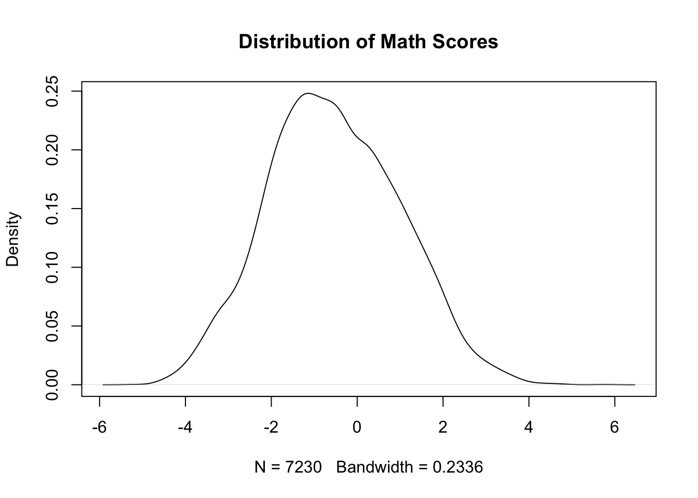
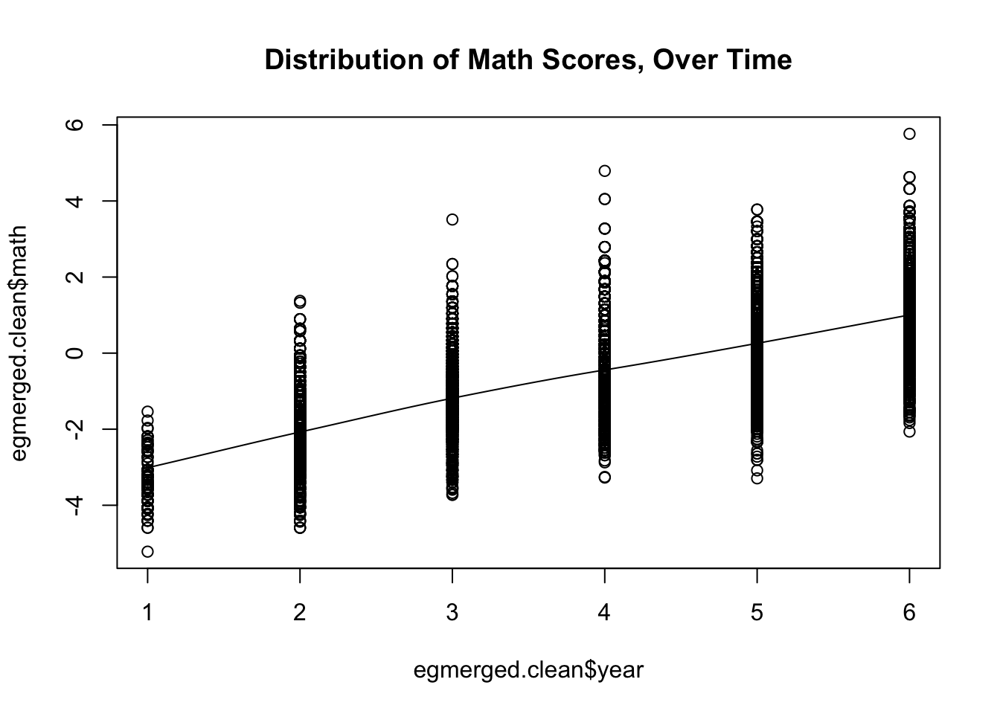
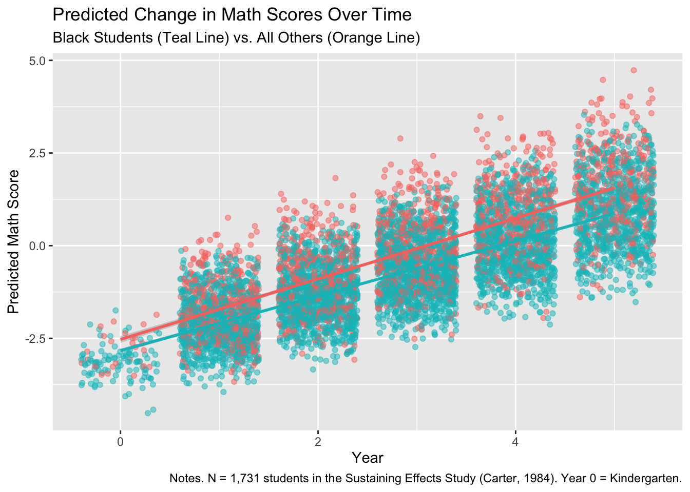
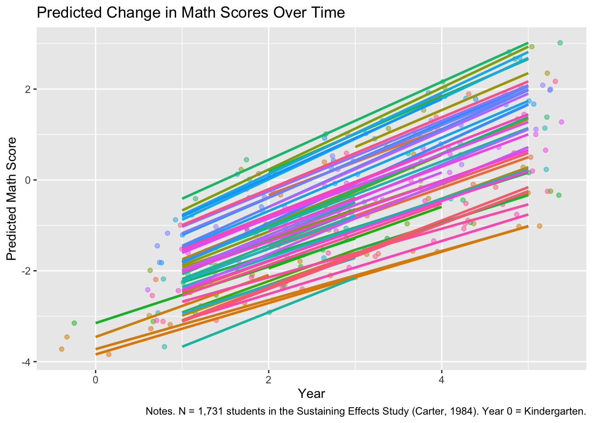

Loading required package: Matrix
Attaching package: 'Matrix'The following objects are masked from 'package:tidyr':
expand, pack, unpackData for this chapter: egmerged.dta
Copy egmerged.dta into this project folder before rendering.
This week, we go to a dataset collected as part of the US Sustaining Effects Study (Carter 1984), which attempted to assess the sustaining impacts of compensatory schooling for students over time.
The nesting changes character here. Instead of students within schools, we have observations within students: repeated measures over time. The mathematics barely changes. The interpretation changes completely, and it is worth slowing down for that shift.
Loading required package: Matrix
Attaching package: 'Matrix'The following objects are masked from 'package:tidyr':
expand, pack, unpackRows: 7,230
Columns: 12
$ schoolid <dbl> 3430, 3610, 2180, 3040, 3221, 3360, 4450, 4390, 3610, 3610, 3…
$ childid <dbl> 289376791, 288278731, 292789461, 275898121, 300246721, 244834…
$ year <dbl> 1, 1, 1, 1, 1, 1, 1, 1, 1, 1, 1, 1, 1, 1, 1, 1, 1, 1, 1, 1, 1…
$ grade <dbl> 0, 0, 0, 0, 0, 0, 0, 0, 0, 0, 0, 0, 0, 0, 0, 0, 0, 0, 0, 0, 0…
$ math <dbl> -3.887, -4.055, -3.525, -3.592, -3.525, -3.068, -2.596, -3.72…
$ retained <dbl> 0, 0, 0, 0, 0, 0, 0, 0, 0, 0, 0, 0, 0, 0, 0, 0, 0, 0, 0, 0, 0…
$ female <dbl> 1, 1, 0, 0, 0, 0, 0, 0, 0, 0, 0, 1, 1, 0, 0, 0, 1, 0, 1, 0, 1…
$ black <dbl> 1, 1, 1, 1, 1, 1, 1, 1, 1, 1, 1, 0, 1, 1, 1, 1, 1, 1, 1, 1, 1…
$ hispanic <dbl> 0, 0, 0, 0, 0, 0, 0, 0, 0, 0, 0, 1, 0, 0, 0, 0, 0, 0, 0, 0, 0…
$ size <dbl> 641, 1062, 777, 724, 185, 526, 710, 532, 1062, 1062, 1062, 10…
$ lowinc <dbl> 84.8, 97.8, 96.6, 45.3, 94.6, 100.0, 66.2, 66.4, 97.8, 97.8, …
$ mobility <dbl> 38.2, 26.8, 44.4, 18.7, 47.4, 55.4, 25.4, 20.9, 26.8, 26.8, 2…Notice the shape. There is one row per student per year, not one row per student. This is called long format, and it is what growth models require. A student who was measured six times appears in six rows, with their time-invariant characteristics repeated on each one.
describe from the Hmisc packageHmisc::describe(egmerged)egmerged
12 Variables 7230 Observations
--------------------------------------------------------------------------------
schoolid Format:%12.0g
n missing distinct Info Mean pMedian Gmd .05
7230 0 60 0.999 3310 3315 778.3 2330
.10 .25 .50 .75 .90 .95
2340 2820 3280 3850 4280 4390
lowest : 2020 2040 2180 2330 2340, highest: 4380 4390 4410 4440 4450
--------------------------------------------------------------------------------
childid Format:%12.0g
n missing distinct Info Mean pMedian Gmd .05
7230 0 1721 1 290098439 2.95e+08 23285178 227501781
.10 .25 .50 .75 .90 .95
261741391 286008442 297153001 303767301 308611751 310002702
lowest : 101480302 173559292 174743401 174755092 179986251
highest: 316843741 317345681 317654202 839559420 839578020
--------------------------------------------------------------------------------
year Format:%12.0g
n missing distinct Info Mean pMedian Gmd
7230 0 6 0.961 3.88 4 1.576
Value 1 2 3 4 5 6
Frequency 131 1346 1520 1672 1387 1174
Proportion 0.018 0.186 0.210 0.231 0.192 0.162
--------------------------------------------------------------------------------
grade Format:%12.0g
n missing distinct Info Mean pMedian Gmd
7230 0 6 0.957 1.812 2 1.523
Value 0 1 2 3 4 5
Frequency 1582 1612 1653 1356 1018 9
Proportion 0.219 0.223 0.229 0.188 0.141 0.001
--------------------------------------------------------------------------------
math Format:%12.0g
n missing distinct Info Mean pMedian Gmd .05
7230 0 523 1 -0.5369 -0.5575 1.743 -3.068
.10 .25 .50 .75 .90 .95
-2.461 -1.631 -0.619 0.551 1.514 2.034
lowest : -5.219 -4.591 -4.432 -4.406 -4.258, highest: 4.051 4.319 4.627 4.791 5.766
--------------------------------------------------------------------------------
retained Format:%12.0g
n missing distinct Info Sum Mean
7230 0 2 0.145 368 0.0509
--------------------------------------------------------------------------------
female Format:%12.0g
n missing distinct Info Sum Mean
7230 0 2 0.75 3685 0.5097
--------------------------------------------------------------------------------
black Format:%12.0g
n missing distinct Info Sum Mean
7230 0 2 0.644 4977 0.6884
--------------------------------------------------------------------------------
hispanic Format:%12.0g
n missing distinct Info Sum Mean
7230 0 2 0.365 1024 0.1416
--------------------------------------------------------------------------------
size Format:%12.0g
n missing distinct Info Mean pMedian Gmd .05
7230 0 59 0.999 753.4 739.5 352.3 339
.10 .25 .50 .75 .90 .95
380 511 724 944 1203 1424
lowest : 113 127 185 240 247, highest: 1203 1222 1302 1424 1486
--------------------------------------------------------------------------------
lowinc Format:%12.0g
n missing distinct Info Mean pMedian Gmd .05
7230 0 50 0.997 77.79 82.15 27.6 18.7
.10 .25 .50 .75 .90 .95
36.9 59.3 92.6 98.1 100.0 100.0
lowest : 0 17.2 18.7 26.7 29.6, highest: 98.7 99.3 99.6 99.7 100
--------------------------------------------------------------------------------
mobility Format:%12.0g
n missing distinct Info Mean pMedian Gmd .05
7230 0 55 0.999 34.17 33.95 15.76 10.5
.10 .25 .50 .75 .90 .95
16.4 25.4 31.7 43.7 52.4 55.4
lowest : 8.8 10.5 12.5 14.3 16.4, highest: 54.4 55.4 56.4 62.3 67
--------------------------------------------------------------------------------Our model is easier to interpret if time starts at 0.
That last line is doing more work than it appears to. The intercept in any regression is the predicted outcome when every predictor equals zero, including time. Left as year running from 1, the intercept would describe a hypothetical measurement occasion before the study began. Recoded so the first wave is 0, the intercept becomes the predicted score at the start of the study, which is a quantity you can defend in print.
arrange to examine variables that vary by student, year, and school# A tibble: 7,230 × 12
schoolid childid year grade math retained female black hispanic size
<dbl> <dbl> <dbl> <dbl> <dbl> <dbl> <dbl> <dbl> <dbl> <dbl>
1 3440 101480302 3 1 -1.69 0 1 1 0 588
2 3440 101480302 4 2 -0.211 0 1 1 0 588
3 3440 101480302 5 3 -0.403 0 1 1 0 588
4 3440 101480302 6 4 0.501 0 1 1 0 588
5 2820 173559292 3 1 -0.194 0 0 0 0 678
6 2820 173559292 4 2 2.14 0 0 0 0 678
7 2820 173559292 5 3 1.42 0 0 0 0 678
8 3430 174743401 2 0 -1.99 0 1 1 0 641
9 3430 174743401 3 1 -1.18 0 1 1 0 641
10 3430 174743401 4 2 -1.45 0 1 1 0 641
# ℹ 7,220 more rows
# ℹ 2 more variables: lowinc <dbl>, mobility <dbl>Sorting by student and then by year lets you read one child’s trajectory across consecutive rows. Do this before modeling. You will see immediately whether every student has the same number of observations, whether years are consecutive, and whether the outcome moves in a plausible way.
# A tibble: 6 × 2
grade avg_math_score
<dbl> <dbl>
1 0 -2.16
2 1 -1.04
3 2 -0.334
4 3 0.345
5 4 1.25
6 5 2.37 Comparing these two tables is a nice diagnostic. Year counts time since the study started; grade counts progress through school. For most students they move together, so the two tables should look nearly identical. Where they diverge, you are seeing students who were retained and therefore fell out of step, which is exactly what the retained variable records.
student.level <-egmerged.clean %>%
group_by(childid) %>%
summarize(.,
black = mean(black),
hispanic = mean(hispanic),
female = mean(female),
retained = max(retained),
math = mean(math, na.rm = TRUE))
glimpse(student.level)Rows: 1,721
Columns: 6
$ childid <dbl> 101480302, 173559292, 174743401, 174755092, 179986251, 179989…
$ black <dbl> 1, 0, 1, 1, 1, 1, 1, 1, 1, 1, 1, 1, 1, 1, 1, 0, 0, 1, 1, 1, 1…
$ hispanic <dbl> 0, 0, 0, 0, 0, 0, 0, 0, 0, 0, 0, 0, 0, 0, 0, 1, 0, 0, 0, 0, 0…
$ female <dbl> 1, 0, 1, 0, 0, 0, 1, 1, 1, 0, 1, 1, 1, 1, 1, 1, 1, 1, 1, 0, 0…
$ retained <dbl> 0, 0, 0, 0, 1, 1, 1, 0, 0, 0, 0, 0, 0, 0, 0, 0, 0, 0, 0, 1, 0…
$ math <dbl> -0.4517500, 1.1223333, -0.8530000, 0.5643333, -2.5121667, -2.…This collapses the long dataset down to one row per student, which is what you need for a descriptive table. Note the different summary functions: mean() for characteristics that are constant within a student, so the mean just returns that constant; max() for retained, which flags a student who was ever retained; and mean() for math, which here gives each student’s average across waves.
| Overall (N=1721) |
|
|---|---|
| math | |
| Mean (SD) | -0.574 (1.12) |
| Median [Min, Max] | -0.616 [-3.65, 3.14] |
| retained | |
| Mean (SD) | 0.206 (0.405) |
| Median [Min, Max] | 0 [0, 1.00] |
| black | |
| Mean (SD) | 0.694 (0.461) |
| Median [Min, Max] | 1.00 [0, 1.00] |
| hispanic | |
| Mean (SD) | 0.145 (0.352) |
| Median [Min, Max] | 0 [0, 1.00] |
The table1 package produces the descriptive table that opens nearly every quantitative paper. Building it from the collapsed student-level data rather than the long data matters: run it on the long file and every student would be counted once per year, inflating your N and misstating the proportions.
school.level <-egmerged.clean %>%
group_by(schoolid) %>%
summarize(.,
lowinc = mean(lowinc),
mobility = mean(mobility),
size = mean(size))
glimpse(school.level)Rows: 60
Columns: 4
$ schoolid <dbl> 2020, 2040, 2180, 2330, 2340, 2380, 2390, 2440, 2480, 2520, 2…
$ lowinc <dbl> 40.3, 83.1, 96.6, 78.9, 93.7, 36.9, 100.0, 44.8, 59.3, 76.9, …
$ mobility <dbl> 12.5, 18.6, 44.4, 31.7, 67.0, 39.3, 39.9, 37.1, 25.8, 10.5, 4…
$ size <dbl> 380, 502, 777, 800, 1133, 439, 566, 767, 113, 828, 339, 511, …| Overall (N=60) |
|
|---|---|
| lowinc | |
| Mean (SD) | 73.7 (27.3) |
| Median [Min, Max] | 82.8 [0, 100] |
| mobility | |
| Mean (SD) | 34.7 (13.2) |
| Median [Min, Max] | 35.8 [8.80, 67.0] |
| size | |
| Mean (SD) | 643 (317) |
| Median [Min, Max] | 582 [113, 1490] |
Same logic one level up. School characteristics get described across schools, not across student-years.

A density plot is a smoothed alternative to a histogram, useful when you care about the shape rather than the exact bin counts.
scatter.smooth is a nice way to get a sense of the trend in the data. But keep in mind, this type of plot does NOT account for observations nested within students, so it should be treated as exploratory.
scatter.smooth(x = egmerged.clean$year,
y = egmerged.clean$math,
main = "Distribution of Math Scores, Over Time")
That caveat is the whole reason for the rest of this chapter. The smoother here treats every point as independent, so it describes the average trend across all observations without knowing that groups of them belong to the same child. It is a good first look and a bad final answer.
Linear mixed model fit by REML ['lmerMod']
Formula: math ~ (1 | childid)
Data: egmerged.clean
REML criterion at convergence: 25624.4
Scaled residuals:
Min 1Q Median 3Q Max
-2.7703 -0.6468 0.0158 0.6545 3.3731
Random effects:
Groups Name Variance Std.Dev.
childid (Intercept) 0.8483 0.921
Residual 1.5247 1.235
Number of obs: 7230, groups: childid, 1721
Fixed effects:
Estimate Std. Error t value
(Intercept) -0.56065 0.02668 -21.02null.icc <- 0.8483/(0.8483 + 1.5247)
null.icc[1] 0.35748Interpret this the way you would any ICC, but notice what the levels now mean. The between-cluster variance is between students, and the within-cluster variance is within a student across occasions. So the ICC answers: how much of the variation in math scores is stable differences between children, versus fluctuation within a child over time?
model.null.growth <- lmer(math ~ year0 + (1|childid), data = egmerged.clean)
summary(model.null.growth)Linear mixed model fit by REML ['lmerMod']
Formula: math ~ year0 + (1 | childid)
Data: egmerged.clean
REML criterion at convergence: 17045.1
Scaled residuals:
Min 1Q Median 3Q Max
-3.7528 -0.5789 -0.0243 0.5598 6.0968
Random effects:
Groups Name Variance Std.Dev.
childid (Intercept) 0.8683 0.9318
Residual 0.3470 0.5891
Number of obs: 7230, groups: childid, 1721
Fixed effects:
Estimate Std. Error t value
(Intercept) -2.707304 0.028169 -96.11
year0 0.747452 0.005401 138.40
Correlation of Fixed Effects:
(Intr)
year0 -0.548null.growth.icc <- 0.8683/(0.8683 + 0.3470)
null.growth.icc[1] 0.7144738Compare the two residual variances: roughly 1.52 in the null model, roughly 0.35 once time is included. That is a large drop, and the reason is worth stating carefully.
In the first model, “within-student variance” lumped together everything that made a child’s scores differ across occasions, including the fact that they were growing. In the second, growth has been pulled out into a fixed effect, so the residual now represents deviation from a student’s own trajectory rather than deviation from their own average.
This is the conceptual heart of growth modeling. The level-1 units are occasions, and what varies at level 1 is how far a particular measurement sits from where the model expected that student to be at that time.
Linear mixed model fit by REML ['lmerMod']
Formula: math ~ year0 + female + (1 | childid)
Data: egmerged.clean
REML criterion at convergence: 17049.1
Scaled residuals:
Min 1Q Median 3Q Max
-3.7547 -0.5792 -0.0257 0.5598 6.0984
Random effects:
Groups Name Variance Std.Dev.
childid (Intercept) 0.8686 0.9320
Residual 0.3470 0.5891
Number of obs: 7230, groups: childid, 1721
Fixed effects:
Estimate Std. Error t value
(Intercept) -2.721185 0.036900 -73.744
year0 0.747427 0.005401 138.387
female 0.027455 0.047131 0.583
Correlation of Fixed Effects:
(Intr) year0
year0 -0.414
female -0.646 -0.007female is measured once per student, so it is a level-2 predictor even though it appears on every row of the long dataset. It can shift a student’s whole trajectory up or down, but on its own it cannot change the slope.
model.2 <- lmer(math ~ year0 + female + black + hispanic + (1|childid), data = egmerged.clean)
summary(model.2)Linear mixed model fit by REML ['lmerMod']
Formula: math ~ year0 + female + black + hispanic + (1 | childid)
Data: egmerged.clean
REML criterion at convergence: 16894
Scaled residuals:
Min 1Q Median 3Q Max
-3.8102 -0.5773 -0.0232 0.5564 6.1171
Random effects:
Groups Name Variance Std.Dev.
childid (Intercept) 0.7833 0.8850
Residual 0.3470 0.5891
Number of obs: 7230, groups: childid, 1721
Fixed effects:
Estimate Std. Error t value
(Intercept) -2.069134 0.062751 -32.974
year0 0.747614 0.005396 138.561
female 0.017957 0.044996 0.399
black -0.808716 0.062144 -13.014
hispanic -0.597271 0.081412 -7.336
Correlation of Fixed Effects:
(Intr) year0 female black
year0 -0.242
female -0.380 -0.008
black -0.810 0.000 0.018
hispanic -0.623 -0.006 0.030 0.620The section heading is the important part. These coefficients describe differences in where students start, not differences in how fast they grow. Everything so far assumes a single common growth rate.
model.3 <- lmer(math ~ year0 + female + black + hispanic + year0:black + year0:hispanic + (1|childid), data = egmerged.clean)
summary(model.3)Linear mixed model fit by REML ['lmerMod']
Formula:
math ~ year0 + female + black + hispanic + year0:black + year0:hispanic +
(1 | childid)
Data: egmerged.clean
REML criterion at convergence: 16830.9
Scaled residuals:
Min 1Q Median 3Q Max
-3.5762 -0.5761 -0.0243 0.5596 6.0517
Random effects:
Groups Name Variance Std.Dev.
childid (Intercept) 0.7854 0.8862
Residual 0.3423 0.5850
Number of obs: 7230, groups: childid, 1721
Fixed effects:
Estimate Std. Error t value
(Intercept) -2.29171 0.07063 -32.449
year0 0.82549 0.01256 65.713
female 0.01953 0.04502 0.434
black -0.49632 0.07408 -6.700
hispanic -0.53621 0.09859 -5.439
year0:black -0.10970 0.01414 -7.758
year0:hispanic -0.02296 0.01920 -1.196
Correlation of Fixed Effects:
(Intr) year0 female black hispnc yr0:bl
year0 -0.506
female -0.339 -0.002
black -0.849 0.483 0.016
hispanic -0.642 0.363 0.024 0.605
year0:black 0.451 -0.888 -0.003 -0.544 -0.322
year0:hspnc 0.331 -0.654 0.001 -0.316 -0.563 0.581Interacting a student-level characteristic with time is how you ask whether trajectories diverge. The main effect is a difference in starting point; the interaction is a difference in slope. Those are separate claims, and conflating them is one of the most common errors in write-ups of growth models.
A gap that is constant over time and a gap that widens over time call for very different responses, and only the interaction can tell them apart.
Each child has their own slope.
model.4 <- lmer(math ~ year0 + female + black + hispanic + (year0|childid), data = egmerged.clean)
summary(model.4)Linear mixed model fit by REML ['lmerMod']
Formula: math ~ year0 + female + black + hispanic + (year0 | childid)
Data: egmerged.clean
REML criterion at convergence: 16645.6
Scaled residuals:
Min 1Q Median 3Q Max
-3.0852 -0.5547 -0.0399 0.5237 5.4432
Random effects:
Groups Name Variance Std.Dev. Corr
childid (Intercept) 0.60360 0.7769
year0 0.02137 0.1462 0.02
Residual 0.30134 0.5489
Number of obs: 7230, groups: childid, 1721
Fixed effects:
Estimate Std. Error t value
(Intercept) -2.144503 0.059617 -35.971
year0 0.748421 0.006352 117.826
female 0.005656 0.043468 0.130
black -0.697309 0.059775 -11.665
hispanic -0.566439 0.078695 -7.198
Correlation of Fixed Effects:
(Intr) year0 female black
year0 -0.189
female -0.387 -0.008
black -0.817 -0.011 0.019
hispanic -0.625 -0.016 0.032 0.615Note the difference from the previous model. The interaction asked whether groups of students grow at different rates. This asks whether individual students do, without trying to explain why. Picture two children with identical third-grade scores: one climbs steadily, the other plateaus. A random intercept model cannot tell them apart. This one can.
rand to testlmerTest::rand(model.4)ANOVA-like table for random-effects: Single term deletions
Model:
math ~ year0 + female + black + hispanic + (year0 | childid)
npar logLik AIC LRT Df Pr(>Chisq)
<none> 9 -8322.8 16664
year0 in (year0 | childid) 7 -8447.0 16908 248.4 2 < 2.2e-16 ***
---
Signif. codes: 0 '***' 0.001 '**' 0.01 '*' 0.05 '.' 0.1 ' ' 1model.5 <- lmer(math ~ year0 + female + black + hispanic + year0:black + (year0|childid), data = egmerged.clean)
summary(model.5)Linear mixed model fit by REML ['lmerMod']
Formula: math ~ year0 + female + black + hispanic + year0:black + (year0 |
childid)
Data: egmerged.clean
REML criterion at convergence: 16598.4
Scaled residuals:
Min 1Q Median 3Q Max
-3.1733 -0.5567 -0.0362 0.5267 5.4746
Random effects:
Groups Name Variance Std.Dev. Corr
childid (Intercept) 0.59434 0.7709
year0 0.01911 0.1383 0.07
Residual 0.30155 0.5491
Number of obs: 7230, groups: childid, 1721
Fixed effects:
Estimate Std. Error t value
(Intercept) -2.267271 0.061772 -36.704
year0 0.816435 0.011093 73.601
female 0.005709 0.043453 0.131
black -0.514994 0.064558 -7.977
hispanic -0.579556 0.078694 -7.365
year0:black -0.099556 0.013407 -7.426
Correlation of Fixed Effects:
(Intr) year0 female black hispnc
year0 -0.319
female -0.374 -0.004
black -0.830 0.307 0.018
hispanic -0.597 -0.028 0.031 0.561
year0:black 0.266 -0.827 0.000 -0.378 0.023predicted.vals <- broom.mixed::augment(model.5, effects = c("ran_pars", "fixed"), conf.int = TRUE)
glimpse(predicted.vals)Rows: 7,230
Columns: 17
$ math <dbl> -3.887, -4.055, -3.525, -3.592, -3.525, -3.068, -2.596, -3.72…
$ year0 <dbl> 0, 0, 0, 0, 0, 0, 0, 0, 0, 0, 0, 0, 0, 0, 0, 0, 0, 0, 0, 0, 0…
$ female <dbl> 1, 1, 0, 0, 0, 0, 0, 0, 0, 0, 0, 1, 1, 0, 0, 0, 1, 0, 1, 0, 1…
$ black <dbl> 1, 1, 1, 1, 1, 1, 1, 1, 1, 1, 1, 0, 1, 1, 1, 1, 1, 1, 1, 1, 1…
$ hispanic <dbl> 0, 0, 0, 0, 0, 0, 0, 0, 0, 0, 0, 1, 0, 0, 0, 0, 0, 0, 0, 0, 0…
$ childid <dbl> 289376791, 288278731, 292789461, 275898121, 300246721, 244834…
$ .fitted <dbl> -3.585709, -4.002690, -2.368814, -2.936436, -3.020023, -3.051…
$ .resid <dbl> -0.30129073, -0.05231038, -1.15618618, -0.65556371, -0.504976…
$ .hat <dbl> 0.2930998, 0.2930998, 0.3195197, 0.3195197, 0.3195197, 0.2933…
$ .cooksd <dbl> 2.942833e-02, 8.870945e-04, 5.098199e-01, 1.639046e-01, 9.725…
$ .fixed <dbl> -2.776557, -2.776557, -2.782265, -2.782265, -2.782265, -2.782…
$ .mu <dbl> -3.585709, -4.002690, -2.368814, -2.936436, -3.020023, -3.051…
$ .offset <dbl> 0, 0, 0, 0, 0, 0, 0, 0, 0, 0, 0, 0, 0, 0, 0, 0, 0, 0, 0, 0, 0…
$ .sqrtXwt <dbl> 1, 1, 1, 1, 1, 1, 1, 1, 1, 1, 1, 1, 1, 1, 1, 1, 1, 1, 1, 1, 1…
$ .sqrtrwt <dbl> 1, 1, 1, 1, 1, 1, 1, 1, 1, 1, 1, 1, 1, 1, 1, 1, 1, 1, 1, 1, 1…
$ .weights <dbl> 1, 1, 1, 1, 1, 1, 1, 1, 1, 1, 1, 1, 1, 1, 1, 1, 1, 1, 1, 1, 1…
$ .wtres <dbl> -0.30129073, -0.05231038, -1.15618618, -0.65556371, -0.504976…augment() returns the original data plus fitted values, residuals, and related quantities in a tidy data frame. Asking for both "ran_pars" and "fixed" means the fitted values incorporate each child’s own random effects, not just the average trajectory, which is what makes the next plot show individual variation.
ggplot(data = predicted.vals, mapping = aes(x = year0, y = .fitted, color = as_factor(black))) +
geom_jitter(alpha = .50) +
geom_smooth(method = "lm", formula = 'y ~ x') +
labs(title = "Predicted Change in Math Scores Over Time",
subtitle = "Black Students (Teal Line) vs. All Others (Orange Line)",
caption = "Notes. N = 1,731 students in the Sustaining Effects Study (Carter, 1984). Year 0 = Kindergarten.") +
ylab("Predicted Math Score") +
xlab("Year") +
theme(legend.position = "none")
The two lines are the interaction made visible. If they run parallel, the growth rates are the same and only the starting points differ. If they diverge, the gap is widening. Reading the coefficient tells you which; seeing the plot tells you how much it matters.
This gives a sense of the variability in slopes.
predicted.vals50 <- predicted.vals %>%
arrange(childid, year0) %>%
slice(., 1:252)
ggplot(data = predicted.vals50, mapping = aes(x = year0, y = .fitted, color = as_factor(childid))) +
geom_jitter(alpha = .50) +
geom_smooth(method = "lm", formula = 'y ~ x') +
labs(title = "Predicted Change in Math Scores Over Time",
caption = "Notes. N = 1,731 students in the Sustaining Effects Study (Carter, 1984). Year 0 = Kindergarten.") +
ylab("Predicted Math Score") +
xlab("Year") +
theme(legend.position = "none")
This is the picture the random slope variance is summarizing. Each line is one child. The spread of their angles is the slope variance, and seeing it directly is more convincing than any number in the output.
Slicing the first 252 rows is a quick way to grab roughly the first 50 students once the data are sorted, since most contribute several observations each.
modelsummary and broom.mixed to organize your resultslibrary(modelsummary)
library(broom.mixed)
models <- list(model.null, model.null.growth, model.1, model.2, model.3, model.4, model.5)
modelsummary(models, output = "default")| (1) | (2) | (3) | (4) | (5) | (6) | (7) | |
|---|---|---|---|---|---|---|---|
| (Intercept) | -0.561 | -2.707 | -2.721 | -2.069 | -2.292 | -2.145 | -2.267 |
| (0.027) | (0.028) | (0.037) | (0.063) | (0.071) | (0.060) | (0.062) | |
| year0 | 0.747 | 0.747 | 0.748 | 0.825 | 0.748 | 0.816 | |
| (0.005) | (0.005) | (0.005) | (0.013) | (0.006) | (0.011) | ||
| female | 0.027 | 0.018 | 0.020 | 0.006 | 0.006 | ||
| (0.047) | (0.045) | (0.045) | (0.043) | (0.043) | |||
| black | -0.809 | -0.496 | -0.697 | -0.515 | |||
| (0.062) | (0.074) | (0.060) | (0.065) | ||||
| hispanic | -0.597 | -0.536 | -0.566 | -0.580 | |||
| (0.081) | (0.099) | (0.079) | (0.079) | ||||
| year0 × black | -0.110 | -0.100 | |||||
| (0.014) | (0.013) | ||||||
| year0 × hispanic | -0.023 | ||||||
| (0.019) | |||||||
| SD (Intercept childid) | 0.921 | 0.932 | 0.932 | 0.885 | 0.886 | 0.777 | 0.771 |
| SD (year0 childid) | 0.146 | 0.138 | |||||
| Cor (Intercept~year0 childid) | 0.024 | 0.069 | |||||
| SD (Observations) | 1.235 | 0.589 | 0.589 | 0.589 | 0.585 | 0.549 | 0.549 |
| Num.Obs. | 7230 | 7230 | 7230 | 7230 | 7230 | 7230 | 7230 |
| R2 Marg. | 0.000 | 0.472 | 0.472 | 0.511 | 0.512 | 0.504 | 0.510 |
| R2 Cond. | 0.357 | 0.849 | 0.849 | 0.850 | 0.852 | 0.869 | 0.870 |
| AIC | 25630.4 | 17053.1 | 17059.1 | 16908.0 | 16848.9 | 16663.6 | 16618.4 |
| BIC | 25651.1 | 17080.7 | 17093.5 | 16956.2 | 16910.9 | 16725.6 | 16687.2 |
| ICC | 0.4 | 0.7 | 0.7 | 0.7 | 0.7 | 0.7 | 0.7 |
| RMSE | 1.13 | 0.52 | 0.52 | 0.52 | 0.52 | 0.47 | 0.47 |
modelsummary(models, output = 'msum.html', title = 'MLM Estimates')Next week we take this further, into growth that is not a straight line and into models that let the variance itself change over time.